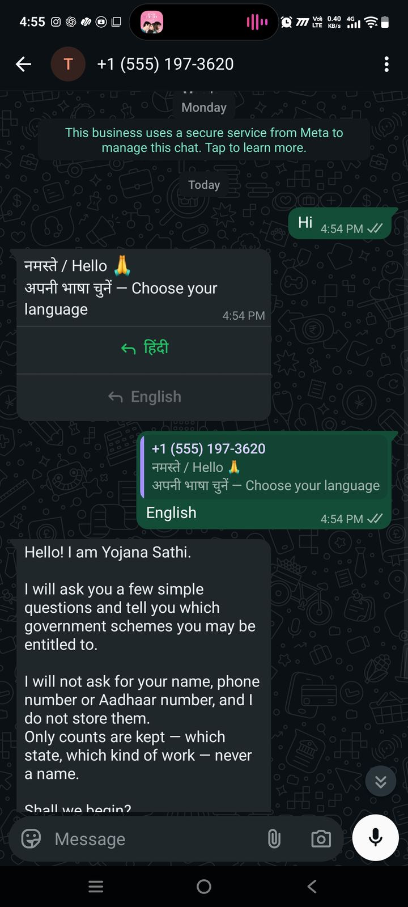
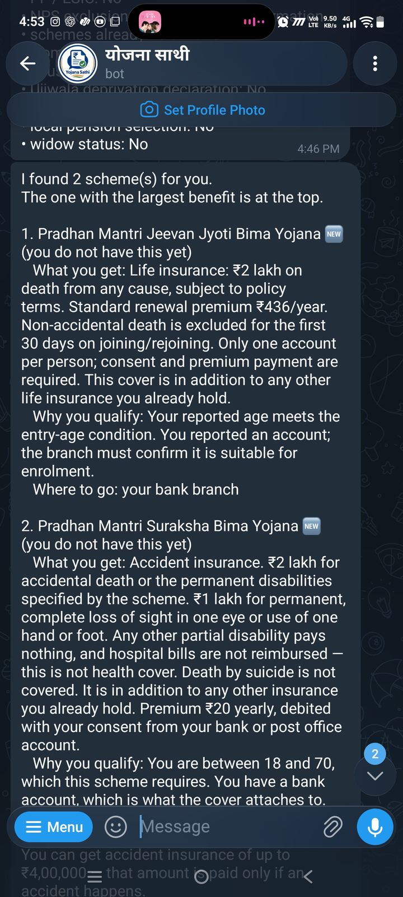
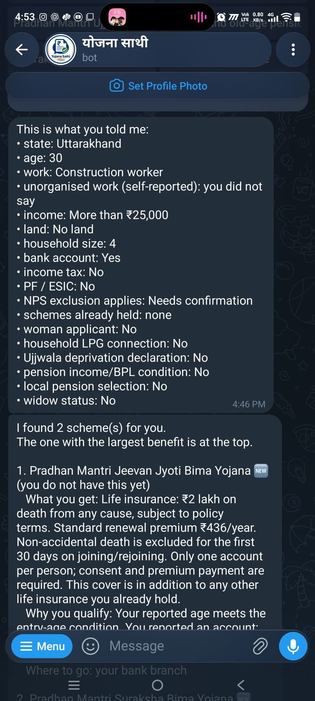
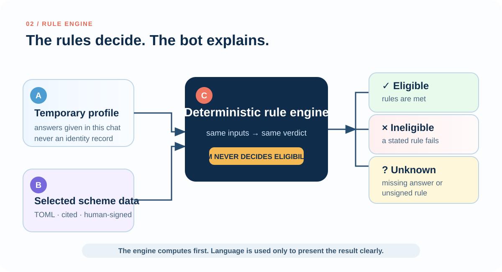
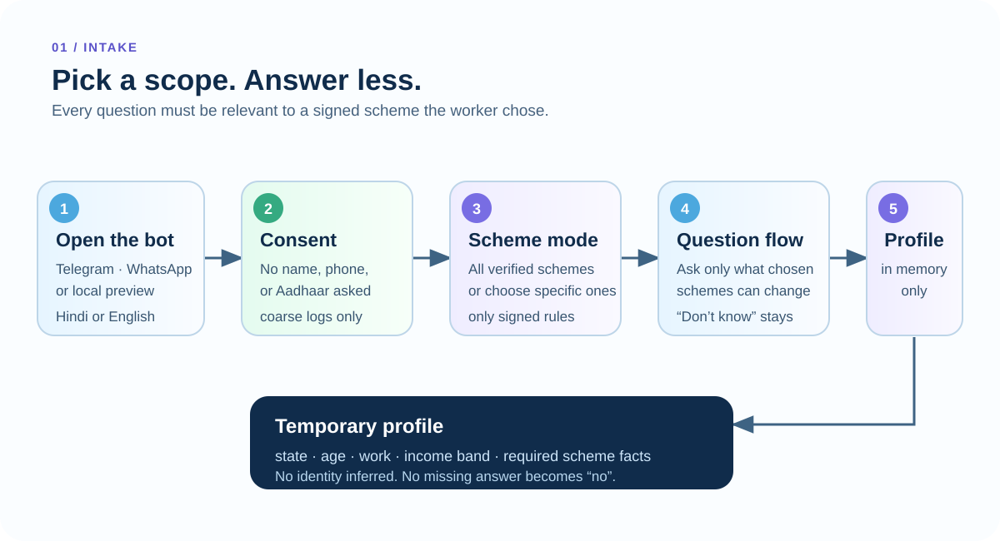
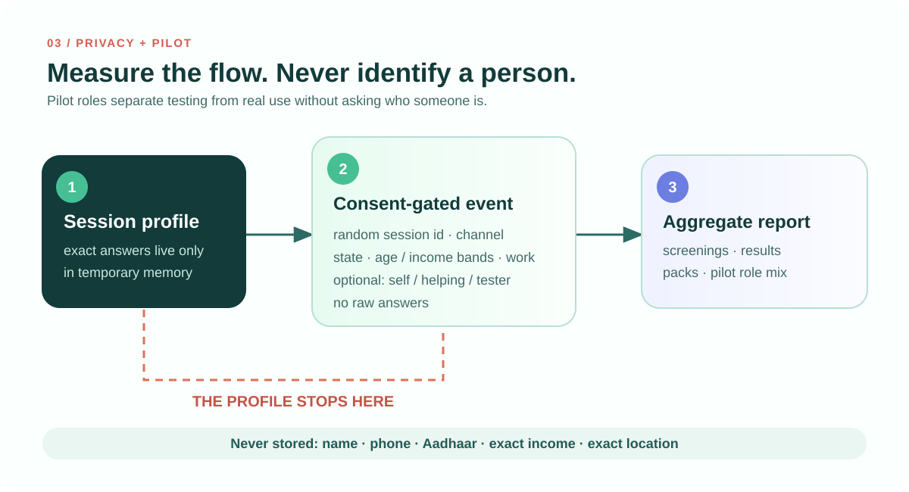
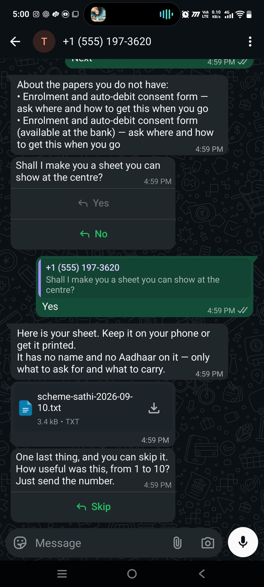

No field impact yet
No worker has used this outside maintainer testing. No claim about applications filed, benefits received, or people reached.
Code for a Billion 2026 · Livelihood
A Hindi and English chat that tells an unorganised worker which welfare schemes fit, what to carry, and where to begin — before a day's wage is spent finding out at a counter.
आपके लिए 3 योजना मिलीं। सबसे ऊपर वह है जिसमें सबसे ज़्यादा फ़ायदा है।
प्रधानमंत्री श्रम योगी मानधन
क्या मिलेगा: 60 साल के बाद कम से कम ₹3,000 महीना पेंशन।
कहाँ से शुरू करें: नज़दीकी जन सेवा केंद्र (CSC)
यह रकम मिलने की गारंटी नहीं है। आवेदन और अधिकारी की जाँच बाकी है।
The problem
Schemes are not hidden — they are published and announced. What a worker cannot tell from the outside is whether a scheme will actually accept them.
Registration is not receipt of a benefit — none of these figures measures this project
How it decides
Every answer moves through the same four stages, producing the same result each time it runs.
Buttons before typing. "Don't know" is offered on every question and survives to the verdict.
One readable TOML file per scheme, each condition beside its official source and review date.
Same answers, same verdict. No network call in the path, no language-model import in the module.
The reason behind the result, the documents to carry, and the kind of counter to start at.



The design
Most screeners have two outcomes and quietly default the third. If a worker has not answered a question, or a rule has not been checked by a person, this one says so — and names the missing fact instead of implying the worker failed a test.
Architecture
The optional language model sits outside the decision path. It may propose an occupation label for the worker to confirm — and nothing else.





The handoff
Coverage
A short list of answers that hold up beats a long directory of approximate ones. The two Uttarakhand pensions are alternative routes to one state payment and are never added together.
| Scheme | Stated benefit | Where an application begins |
|---|---|---|
| PM Shram Yogi Maandhan | ₹36,000 per year from age 60 | Common Service Centre |
| Uttarakhand old-age pension | ₹18,000 per year | State portal |
| Uttarakhand widow pension | ₹18,000 per year | State portal |
| PM Jeevan Jyoti Bima Yojana | ₹2,00,000 life cover | Bank branch |
| PM Suraksha Bima Yojana | ₹2,00,000 accident cover | Bank branch |
| PM Ujjwala Yojana | In-kind LPG support | Online or an LPG distributor |
| e-Shram registration | Gateway — no payout of its own | e-Shram portal or a CSC |
The honest section
Naming what has not been shown yet is part of the product, not a disclaimer buried at the bottom.
No worker has used this outside maintainer testing. No claim about applications filed, benefits received, or people reached.
Every rupee figure is what a scheme states it pays — not money anyone has been shown to have received through this tool.
An independent open-source project. Where a rule here conflicts with a department, the department is right.
The Uttarakhand widow-pension amount comes from myScheme because the department page does not state it.
Both flows are tested by the maintainer. Comprehension has not been checked with non-technical workers.
Telegram is live. WhatsApp runs on Meta's test tier until business verification completes.
Sources